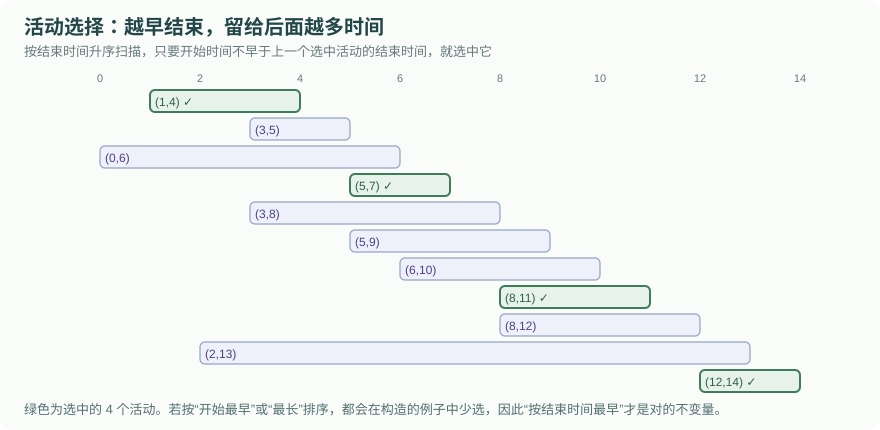
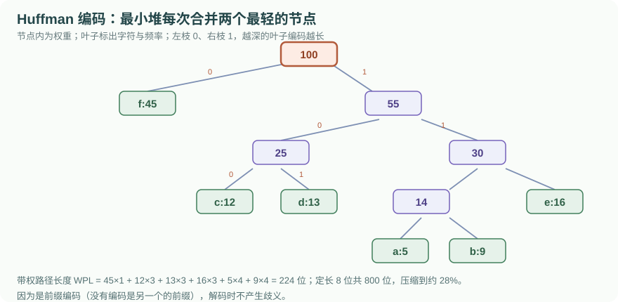
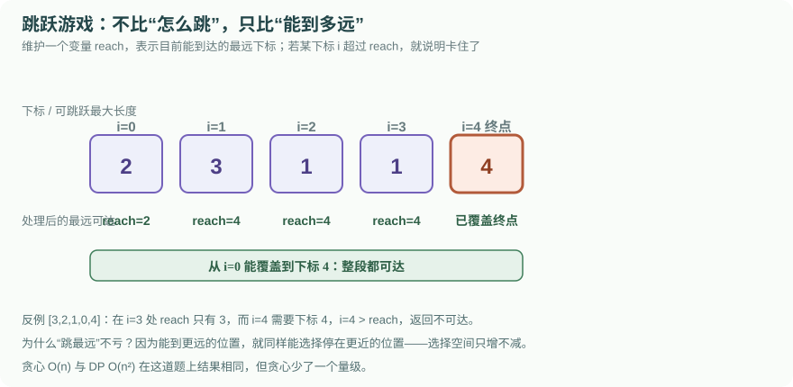

贪心算法：每一步都选当前最好
贪心是最快的算法范式，也是最容易“想当然”的范式。它只对满足特定性质的问题有效——找零的 1/3/4 反例、区间调度与跳跃游戏，正好用来说明“什么时候可以放心贪心”。
聪明的找零与它的陷阱
如果硬币面额是 1、2、5，要凑出 11 元，你几乎本能地会先拿 5、再拿 5、再拿 1，共 3 枚。这个“每次拿最大面额”的策略叫做贪心，在这里它是对的。
但把面额换成 1、3、4，要凑出 6 元：贪心先拿 4，剩下 2 只能用两个 1，共 3 枚；而最优解是两个 3，只要 2 枚。同一种“拿最大”的策略，换一组面额就翻车了。
这个反例提醒我们一个关键区分：贪心是一种策略，不是一种保证。它能否得出最优解，取决于问题本身是否具备某些性质。本章先用对比把“何时可以贪心”讲清楚，再拿区间调度、Huffman 编码和跳跃游戏三个经典例子把它看透。
贪心何时才对
贪心算法按固定规则逐步构造解，每一步都选当前看起来最好的选项，不做回头。它与动态规划的最大区别在于：贪心不保留其他可能的路径，而 DP 会把所有选择都算一遍。
| 维度 | 贪心 | 动态规划 |
|---|---|---|
| 决策依据 | 只看当前，选局部最优 | 比较所有之前的子问题 |
| 对未来的影响 | 选择不影响后续可选空间（无后效性） | 当前选择决定后续状态 |
| 正确性来源 | 需证明贪心选择性质 | 只要状态转移正确就成立 |
| 典型代价 | O(n) 或 O(n log n) | 常为 O(n²) 或更高 |
判断贪心是否正确，需要两个性质同时成立：
- 贪心选择性质：存在一种局部最优的选择，它包含在某个全局最优解中。换句话说，选它不会把通往最优的路堵死。
- 最优子结构：做出这个选择后，剩下的子问题仍能用同样方式贪心求解。
实践上先找反例：用一个小输入验证贪心结果是否等于暴力/DP 的最优值。找不到反例，再试着用交换论证解释“若最优解没选这个局部最优，可以把它换进来且不变差”。
区间调度：按结束时间最早
活动选择问题：给定 n 个活动各自的时间区间，同一时刻只能参加一个，问最多能参加多少个。贪心策略是按结束时间从早到晚排序，能接上就选。

def activity_selection(activities):
count, last_end = 0, float("-inf")
for start, end in sorted(activities, key=lambda a: a[1]):
if start >= last_end: # 与上一个不重叠
count += 1
last_end = end
return count为什么“结束最早”不亏？设最优解里第一个活动结束于 t，而贪心选的结束于 g ≤ t。把最优解里与贪心活动重叠的那些全部换成贪心选的，因为 g 更早，后续可选区间只会变多不会变少——这就是交换论证。LeetCode 435“无重叠区间”就是它的逆向：最少移除数 = 总数 − 最多保留数。
Huffman 编码：合并最轻的两个
Huffman 编码解决数据压缩问题：给定每个字符的出现频率，设计一套二进制编码，使总长度最短。直觉是“频率高的字符用短编码”，对应的贪心规则是：把频率最小的两个节点合并成一个新节点，重复到只剩一个为止，合并出的就是一棵二叉树。

import heapq
def huffman_wpl(freqs):
heap = list(freqs)
heapq.heapify(heap)
wpl = 0
while len(heap) > 1:
a = heapq.heappop(heap) # 最小的
b = heapq.heappop(heap) # 第二小的
wpl += a + b # 本次合并的成本
heapq.heappush(heap, a + b)
return wpl合并的总成本恰好等于带权路径长度：频率 5、9、12、13、16、45 依次合并得到 14、25、30、55、100，求和就是 224。因为编码是从根到叶的路径，任何编码都不会是另一个的前缀，所以解码不会歧义。要提醒的是，Huffman 对“符号频率”是最优的，但它不一定是任何场景下最优的压缩方案（工程上还会结合字典、上下文模型等）。
跳跃游戏：贪心 vs DP
跳跃游戏：数组每个元素表示从该位置最多能向前跳的长度，判断能否到达最后一个下标。贪心的不变量很简洁：只维护一个“最远可达下标” reach，遍历时若当前位置 i 超过 reach 就卡住了；否则用 reach = max(reach, i + nums[i]) 更新。

def can_jump(nums):
reach = 0
for i, step in enumerate(nums):
if i > reach: # 到不了这里，卡住
return False
reach = max(reach, i + step)
return True对比一下 DP：dp[i] 表示“能否到达 i”，需要枚举 i 之前的每个 j，O(n²)。贪心只需一遍扫描，O(n)。为什么贪心在这道题上对？因为“能到更远”永远不会比“只能到更近”更差——跳到最远位置后，依然可以选择少走，选择空间不减，于是贪心选择性质成立。
逐步观察最远可达下标
固定数组 [2, 3, 1, 1, 4]，拖动滑块查看每步的 reach。
贪心适用判断清单
遇到新题时，按下面的顺序自查，比死记题型更可靠：
- 先找反例：构造一个小输入，看贪心结果是否等于暴力/DP 的最优值。
- 看局部最优是否妨碍全局：选了当前最优后，后续可选集合是否会被不可接受地缩小。
- 试交换论证：假设最优解没选你打算选的那个，能不能把它换进来而不变差。
- 看有无后效性：若当前选择会改变后续子问题的状态，应改用 DP。
- 看数据规模：n 到 10⁵ 且需要线性或 n log n 时，优先考虑是否有贪心解。
另外，贪心的实现常靠排序或堆：区间调度靠按结束时间排序，Huffman 靠最小堆取两个最小项，Dijkstra（第 13 章）靠最小堆取最近顶点。先把容器选对，代码就短了。
算法范式小结与衔接
至此，五种算法范式已经排在一起了：排序把数据变有序，递归与分治把问题化小，回溯枚举所有解，动态规划在重叠子问题里求最优或计数，贪心在不影响未来的前提下直接选局部最优。它们的共同基础，是对“子问题结构”的不同假设。
| 范式 | 子问题关系 | 目标 | 判断标志 |
|---|---|---|---|
| 分治 | 不重叠，可合并 | 唯一解 | 能均匀拆成同结构子问题 |
| 回溯 | 决策树，通常不重叠 | 全部解 | 要求“列出所有可能” |
| 动态规划 | 大量重叠 | 最优值 / 方案数 | 有最优子结构且子问题重复 |
| 贪心 | 只走一条路 | 最优值 | 局部最优不影响未来选择 |
同样的题往往有多种范式可选。“零钱兑换”既可以用 DP（正确）也可以用贪心（仅在特定面额下正确），而“跳跃游戏”两者都行、只是贪心更快。选哪种不是背题目，而是先判断子问题的结构。
下一章进入新的模块：高级索引。第一站是并查集（Union-Find）——短短几十行代码就能高效维护“谁和谁连通”，也是 Kruskal 最小生成树（第 13 章）的关键构件。
带走三个判断准则
- 贪心正确需要两个条件：贪心选择性质（局部最优不堵死全局最优）和最优子结构；少一个就可能翻车。
- 判断贪心是否成立，先构造小反例：找不到反例再用交换论证解释“为什么不亏”，比背诵题型可靠。
- 当当前选择会影响后续可选空间（有后效性）时，用 DP；贪心只适用于“选择不影响未来”的场景。
继续学习与校验资料
- Greedy algorithm — 贪心选择性质、拟阵与交换论证
- Huffman coding — 前缀编码与带权路径长度的原始表述
- 上一章：动态规划 — 贪心与 DP 的分工
- 运行参考：
examples/greedy.py；测试：tests/test_greedy.py